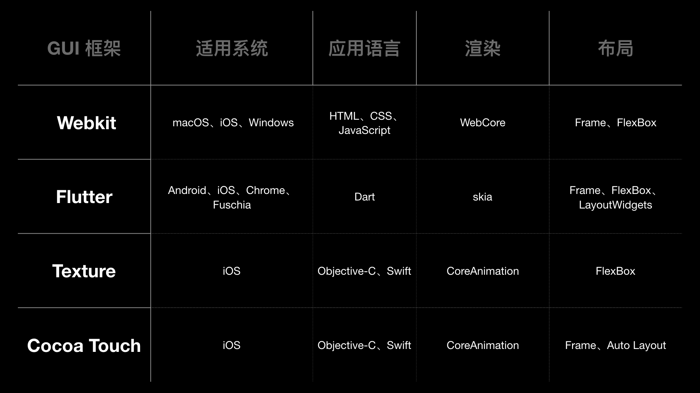
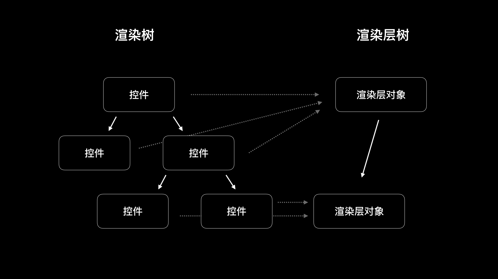

- 00 开篇词 锚定一个点，然后在这个点上深耕.md.html
- 01 建立你自己的iOS开发知识体系.md.html
- 02 App 启动速度怎么做优化与监控？.md.html
- 03 Auto Layout 是怎么进行自动布局的，性能如何？.md.html
- 04 项目大了人员多了，架构怎么设计更合理？.md.html
- 05 链接器：符号是怎么绑定到地址上的？.md.html
- 06 App 如何通过注入动态库的方式实现极速编译调试？.md.html
- 07 Clang、Infer 和 OCLint ，我们应该使用谁来做静态分析？.md.html
- 08 如何利用 Clang 为 App 提质？.md.html
- 09 无侵入的埋点方案如何实现？.md.html
- 10 包大小：如何从资源和代码层面实现全方位瘦身？.md.html
- 11 热点问题答疑（一）：基础模块问题答疑.md.html
- 12 iOS 崩溃千奇百怪，如何全面监控？.md.html
- 13 如何利用 RunLoop 原理去监控卡顿？.md.html
- 14 临近 OOM，如何获取详细内存分配信息，分析内存问题？.md.html
- 15 日志监控：怎样获取 App 中的全量日志？.md.html
- 16 性能监控：衡量 App 质量的那把尺.md.html
- 17 远超你想象的多线程的那些坑.md.html
- 18 怎么减少 App 电量消耗？.md.html
- 19 热点问题答疑（二）：基础模块问题答疑.md.html
- 20 iOS开发的最佳学习路径是什么？.md.html
- 21 除了 Cocoa，iOS还可以用哪些 GUI 框架开发？.md.html
- 22 细说 iOS 响应式框架变迁，哪些思想可以为我所用？.md.html
- 23 如何构造酷炫的物理效果和过场动画效果？.md.html
- 24 A_B 测试：验证决策效果的利器.md.html
- 25 怎样构建底层的发布和订阅事件总线？.md.html
- 26 如何提高 JSON 解析的性能？.md.html
- 27 如何用 Flexbox 思路开发？跟自动布局比，Flexbox 好在哪？.md.html
- 28 怎么应对各种富文本表现需求？.md.html
- 29 如何在 iOS 中进行面向测试驱动开发和面向行为驱动开发？.md.html
- 30 如何制定一套适合自己团队的 iOS 编码规范？.md.html
- 31 iOS 开发学习资料和书单推荐.md.html
- 32 热点问题答疑（三）.md.html
- 33 iOS 系统内核 XNU：App 如何加载？.md.html
- 34 iOS 黑魔法 Runtime Method Swizzling 背后的原理.md.html
- 35 libffi：动态调用和定义 C 函数.md.html
- 36 iOS 是怎么管理内存的？.md.html
- 37 如何编写 Clang 插件？.md.html
- 38 热点问题答疑（四）.md.html
- 39 打通前端与原生的桥梁：JavaScriptCore 能干哪些事情？.md.html
- 40 React Native、Flutter 等，这些跨端方案怎么选？.md.html
- 41 原生布局转到前端布局，开发思路有哪些转变？.md.html
- 42 iOS原生、大前端和Flutter分别是怎么渲染的？.md.html
- 43 剖析使 App 具有动态化和热更新能力的方案.md.html
- 用户故事 我是如何学习这个专栏的？.md.html
- 结束语 慢几步，深几度.md.html
- 捐赠
21 除了 Cocoa，iOS还可以用哪些 GUI 框架开发？
你好，我是戴铭。
在专栏的第2篇文章“App 启动速度怎么做优化与监控？”中，我和你分享了如何实现方法级别的启动优化，从而实现整个 App 启动速度的优化。
通过这篇文章的内容你会发现，把可以优化方法的工作都处理完之后，比如主线程上的大量计算、IO 操作、懒加载（也叫作延时加载，即当对象需要用到的时候再去加载），就只剩下了GUI（Graphical User Interface 图形用户界面） 相关的方法。
在iOS开发时，默认使用的都是系统自带的 Cocoa Touch 框架，所以如果你还想进一步提高界面响应速度，赶超其他使用 Cocoa Touch框架的 App 用户体验时，就要考虑使用其他的 GUI 框架来优化 App 界面的响应速度了。
接下来，我们就一起聊聊除了 Cocoa Touch 框架外，还有哪些 GUI 框架可以用来做 iOS 开发。
目前流行的GUI框架
现在流行的 GUI 框架除了 Cocoa Touch 外，还有 WebKit、Flutter、Texture（原名 AsyncDisplayKit）、Blink、Android GUI 等。其中，WebKit、Flutter、Texture 可以用于 iOS 开发。接下来，我就和你说说这三款GUI框架。
WebKit 框架包含了 WebCore 和 JavaScriptCore，使用 HTML 和 CSS 进行布局，使用JavaScript 编写程序。WebKit 还提供了 Objective-C 应用程序编程接口，方便基于 Cocoa API 的应用使用。在iOS开发中，我们最常使用的UIWebView和WKWebView控件都是基于WebKit框架。
关于 WebKit框架，我以前写过一篇博客“深入剖析 WebKit”，详细分析了它的原理。感兴趣的话，你可以去看一下。
Flutter 是 Google公司于2017年推出的一个移动应用开发的 GUI 框架，使用 Dart 语言编写程序，一套代码可以同时运行在iOS和Android平台。对Flutter 的相关介绍，我会在专栏后面的文章“React Native、Flutter 等跨端方案，应该怎么选？”和“iOS 原生、大前端和 Flutter 分别是怎么渲染的？”里，和你详细说明。
Texture框架的基本单元，是基于 UIView 抽象的节点 ASDisplayNode。和 UIView 不同的是 ，ASDisplayNode 是线程安全的，可以在后台线程上并行实例化和配置整个层级结构。Texture框架的开发语言，使用的是苹果公司自家的 Objective-C 和 Swift。
WebKit、Flutter、Texture这三个 GUI 框架，与Cocoa Touch的对比，如下图所示：

图1 WebKit、Flutter、Texture框架，与Cocoa Touch的对比
通过这个对比，我们可以发现，Texture框架和Cocoa Touch框架，在使用的编程语言、渲染这两个方面，是完全一样的。其实，Texture框架，正是建立在Cocoa Touch框架之上的。
我们再从这些框架使用的布局来看一下，Texture 和其他 GUI 框架一样都是使用的应用更加广泛的FlexBox布局。使用FlexBox 布局的好处是，可以让iOS开发者用到前端先进的W3C标准响应式布局。目前， FlexBox 已经是布局的趋势，连 iOS 新推出的 UIStackView 布局方式，也是按照 FlexBox 布局思路来设计的。
另外，Texture 是这些框架中唯一使用异步节点计算的框架。使用异步节点计算，可以提高主线程的响应速度。所以，Texture在节点计算上的效率要比其他框架高。
基于以上三个方面的原因，如果要从Cocoa Touch框架前移到其他的GUI框架，从学习成本、收益等角度考虑的话，转到Texture会是个不错的选择。
因此，我会和你重点分析一下Texture框架。因为现在的GUI技术已经非常成熟了，各种GUI框架的底层也大同小异，所以接下来我会先和你介绍GUI框架中的通用性内容，然后再与你讲述Texture的独特之处。
GUI 框架里都有什么？
GUI 框架的基本单元是控件，你熟悉的按钮、图片、文本框等等就是控件。
控件主要负责界面元素数据的存储和更新，这些原始数据都存储在控件的属性上，直接更新控件的属性就能够完成界面元素更新操作，控件的属性设置成不同的值会让界面元素呈现不同的外观。
控件之间的关系是由渲染树（Render Tree）这种抽象的树结构来记录的。渲染树关注的是界面的布局，控件在界面中的位置和大小都是由渲染树来确定。
基于渲染树，GUI 框架还会创建一个渲染层树（RenderLayer Tree），渲染层树由渲染层对象组成，根据 GUI 框架的优化条件来确定创建哪些渲染层对象，每次新创建一个渲染层对象就会去设置它的父对象和兄弟对象。渲染层对象创建完毕，接下来就需要将各渲染层对象里的控件按照渲染树布局生成 Bitmap，最后 GPU 就可以渲染 Bitmap 来让你看到界面了。
控件、渲染树、渲染层树之间的关系，如下图所示：

图2 控件、渲染树、渲染层树之间的关系
WebKit 和 Flutter 都是开源项目，我们可以通过它们的代码看到 GUI 框架具体是怎么实现控件、渲染树、渲染层树和生成 Bitmap 的。
WebKit 在 GUI 框架层面的效率并不低，单就渲染来说，它的性能一点也不弱于 Cocoa Touch 和 Flutter 框架。
- 使用WebKit的网页显示慢，主要是由于 CSS（Cascading Style Sheet） 和 JavaScript 资源加载方式导致的。
- 同时，解析时 HTML、CSS、JavaScript 需要兼容老版本，JavaScript 类型推断失败会重来，列表缺少重用机制等原因，导致WebKit框架的整体性能没有其他框架好。
开始的时候，Flutter 也是基于 Chrome 浏览器引擎的。后来，谷歌公司考虑到Flutter的性能，所以去掉了HTML、CSS、JavaScript 的支持，而改用自家的Dart 语言以甩掉历史包袱。关于这方面的细节，你可以查看Flutter 创始人 Eric 的采访视频来了解 。
这些年来，虽然 GUI 框架百家争鸣，但其渲染技术却一直很稳定。接下来，我就和你详细说说 GUI 框架中的渲染过程。
渲染流程
GUI 框架中的渲染，一般都会经过布局、渲染、合成这三个阶段。
布局阶段要完成的主要工作，是依据渲染树计算出控件的大小和位置。WebKit 用 CSS 来布局，CSS 会提供 Frame 布局和 FlexBox 布局；Flutter 也支持 Frame 布局和 FlexBox 布局；Cocoa Touch 框架本身不支持 FlexBox 布局，但是通过 Facebook 的 Yoga 库也能够使用 FlexBox 布局。
由于 Frame 布局需要精确描述每个界面元素的具体位置和大小，无论从代码编写，还是从代码可读性上看，成本都会高很多。所以说，FlexBox 对于 iOS 开发来说是另外一种很好的选择。
渲染阶段的主要工作，是利用图形函数计算出界面的内容。一般情况下，对于 2D 平面的渲染都是使用CPU 计算，对3D空间的渲染会使用 GPU 计算。
Cocoa Touch 和 Texture 框架使用的是 Core Animation，3D 使用的是 Metal 引擎。Flutter 使用的是 Skia，3D 使用的是 OpenGL(ES)。
在渲染这方面，我觉得 WebKit 做得更出色，考虑到多平台支持，WebKit 将渲染接口抽象了出来，实现层根据平台进行区分，比如在 iOS 上就用 CoreGraphics 来渲染，在 Android 就用 Skia 渲染。
合成阶段的主要工作，是合并图层。这样做的目的，主要是节省显示内存，只显示一屏需要的像素，也只进行这些像素数据的计算。这个过程完成后，再将所得数据进行光栅化处理，最后交给 GPU 渲染成你可以看到的 Bitmap。
关于 WebKit、Cocoa Touch、Flutter框架渲染相关的内容，我会在后面“iOS 原生、大前端和 Flutter 分别是怎么渲染的？”的文章里和你详细说明。
通过上面的内容，我们可以看到，主流 GUI 框架的内容和渲染流程，区别并不是很大。
但 Texture 对于那些希望能够在用户交互体验上进行大幅提升的 iOS 开发者来说，很小的切换成本，同时性能能大幅提升的收益，其实是很有诱惑力的。
通过对GUI框架都包括什么和渲染流程的分析，再次印证了我们的观点：Texture是个值得推荐的框架，不仅在于它与Cocoa Touch框架的相似使得学习成本较低，还得益于它本身在性能上的先进性。
那么，接下来我就再跟你说说 Texture 最大的优势是什么？以及它是怎么做到的？
Texture 里 Node 的异步绘制
Texture 最大的优势就是开发了线程安全的 ASDisplayNode，而且还能够很好的和 UIView 共生。这样的话，我们就可以在原有使用 UIView 开发的程序基础之上使用 Texture，而不用完全重构所有界面。
随着 CPU 多核技术的发展，界面渲染计算都在主线程完成，对于多核 CPU 来说确实是有些浪费。ASDisplayNode 是 UIView 和 CALayer 的抽象，能实现不在主线程执行视图的布局绘制和层级计算，充分发挥多核 CPU 的优势。
首先，我们来看看 Texture 最核心的线程安全节点 ASDisplayNode 是做什么的？
在Cocoa Touch 框架里，当 CALayer 内容更新时会去找 CALayer 的 delegate，也就是 displayLayer: 方法。UIView 会实现 displayLayer: 这个 delegate 方法。UIView 里实现 drawRect: 这个 delegate 方法能够自定义 CALayer。
在 Texture 中，ASDisplayNode 替代了这个delegate，解耦了 UIView 和 CALayer，并将 UIView 包装成 ASDisplayView，将 CALayer 包装成 ASDisplayLayer 供外部使用。
然后，我们再来看看ASDisplayNode 是如何进行异步绘制的？
ASDisplayLayer 是整个绘制的起点，绘制事件先在 displayBlock 设置好，然后 ASDisplayNode 调用 displayBlock 来进行异步绘制。整个过程分为三步。
第一步，得到 displayBlock。这个 Block 里有需要绘制的内容，对应的代码如下：
asyncdisplaykit_async_transaction_operation_block_t displayBlock = [self _displayBlockWithAsynchronous:asynchronously isCancelledBlock:isCancelledBlock rasterizing:NO];
其中，displayBlock 就是需要绘制的内容。
第二步，定义一个回调 completionBlock ，绘制完成后执行。代码如下：
asyncdisplaykit_async_transaction_operation_completion_block_t completionBlock = ^(id<NSObject> value, BOOL canceled){
ASDisplayNodeCAssertMainThread();
if (!canceled && !isCancelledBlock()) {
// displayBlock 执行的是绘图操作，返回的类型是 UIImage
UIImage *image = (UIImage *)value;
BOOL stretchable = (NO == UIEdgeInsetsEqualToEdgeInsets(image.capInsets, UIEdgeInsetsZero));
if (stretchable) {
ASDisplayNodeSetResizableContents(layer, image);
} else {
layer.contentsScale = self.contentsScale;
// 设置为 CALayer 的寄宿图
layer.contents = (id)image.CGImage;
}
[self didDisplayAsyncLayer:self.asyncLayer];
if (rasterizesSubtree) {
ASDisplayNodePerformBlockOnEverySubnode(self, NO, ^(ASDisplayNode * _Nonnull node) {
[node didDisplayAsyncLayer:node.asyncLayer];
});
}
}
};
上面代码中，completionBlock 里就是绘制完成后需要去执行的事情，内容是完成 CALayer 寄宿图的设置。 value 是 displayBlock 返回的值，类型是 UIImage。displayBlock 用的是线程安全的 Core Graphics，所以你可以安心地把 displayBlock 放到后台线程去异步执行。
第三步，如果设置为异步展示，就先向上找到属性 asyncdisplaykit_parentTransactionContainer 为 YES 的 CALayer，获取 containerLayer 的 ASAsyncTransaction，然后将 displayBlock 添加到 ASAsyncTransaction 的调度队列里，根据 drawingPriority 优先级执行displayBlock。具体代码如下：
if (asynchronously) {
// 向上找到属性 asyncdisplaykit_parentTransactionContainer 为 YES 的 CALayer
CALayer *containerLayer = layer.asyncdisplaykit_parentTransactionContainer ? : layer;
// 获取 containerLayer 的 ASAsyncTransaction
_ASAsyncTransaction *transaction = containerLayer.asyncdisplaykit_asyncTransaction;
// 将 displayBlock 添加到 ASAsyncTransaction 的调度队列里
[transaction addOperationWithBlock:displayBlock priority:self.drawingPriority queue:[_ASDisplayLayer displayQueue] completion:completionBlock];
} else {
// 设置为不是异步就直接调用 displayBlock 进行绘制
UIImage *contents = (UIImage *)displayBlock();
completionBlock(contents, NO);
}
可以看到，displayBlock 被添加到 ASAsyncTransaction 里进行调度。这里，ASAsyncTransactionQueue 是 Texture 的调度队列。
通过上面这三步，Texture就完成了 ASDisplayNode 的异步绘制。
小结
在今天这篇文章中，我和你介绍了目前可以用于iOS开发的主流GUI 框架有哪些，这些框架里都有什么，以及它们的渲染流程是怎样的。
通过今天的介绍，你会发现在选择GUI 框架时，渲染方面的区别并不大，而且渲染技术相对比较成熟。所以，我们需要在框架的易用性，以及与现有工程的兼容上做更多的考虑。
如果你想提高 App 的使用体验，让界面操作更流畅的话，我推荐你使用Texture。Texture 易用性和兼容性都很好，同时 Texture 的学习成本与收益比也是最高的。而且，Texture 代码本身的质量很高，有很多值得学习的地方。
课后作业
今天我跟你介绍了 ASDisplayNode 异步绘制的三个步骤，你能说清楚ASAsyncTransaction 是如何调度 displayBlock的吗？请你把答案留言留言给我吧（提示：你可以去翻看一下Texture 的源码）。
当然了，我还为你准备了一个动手题，来帮助你巩固今天所学的内容。请你使用 Texture 来写一个列表，完成后上传到 GitHub 上吧。同时，记得将GitHub的地址贴到评论区，我们一起学习，共同进步。
感谢你的收听，欢迎你在评论区给我留言分享你的观点，也欢迎把它分享给更多的朋友一起阅读。
© 2019 - 2023 Liangliang Lee. Powered by gin and hexo-theme-book.